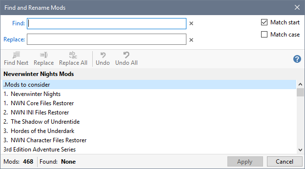
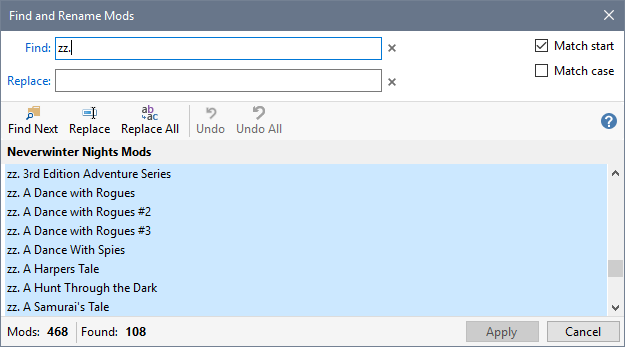
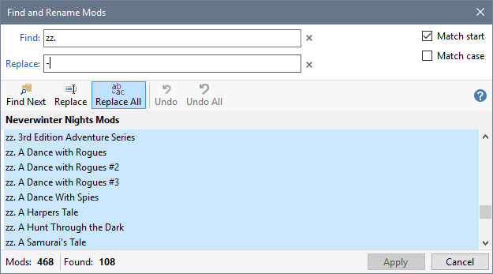
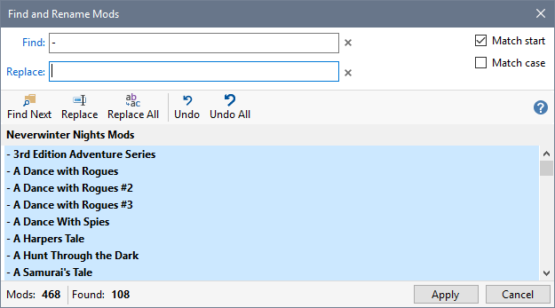
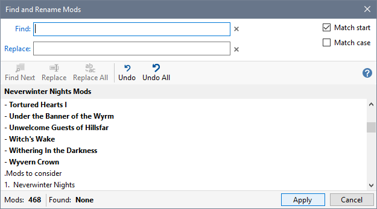

You can rename all the Mods matching your criteria rather than having to repeat the same Rename operation for each Mod.
- You can make multiple changes to Mod names that have already been altered.
- Changed Mod names are shown in bold.
- Renamed Mods that result in duplicate names are shown in Red.
- Double-click a Mod name to place the name in Find and the Replace text boxes so you can edit the name to create your Find and Replace criteria.
- Click Find and Rename Mods from the Edit menu.

- Type in the characters you want to replace in the Find box. The Mod names that match your Find criteria are selected in the Mod list.

- Type in the replacement characters and click Replace All on the toolbar.

- The Mod names are changed so that the Find characters are changed to the Replace characters and the text from the Replace box is moved to the Find box so that changed names are selected. All changed items are emboldened.

- You can make further changes by repeating steps 3 and 4, which can include changed Mod names.
Click Apply when you are ready to rename each of the Mod names you have changed or Cancel to discard all your changes and retain the existing Mod names. Apply ignores duplicates Mod names (shown in Red).

Click Undo to restore selected Mods to their existing names.
Click Undo All to restore all changed Mods to their existing names.
Related Topics
Find files in your Profile
Find files in Contents or Details
Find text within a file
Find and rename Mods